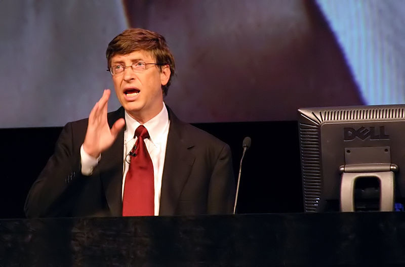

#1 - Cyberpunk 2077 en Abril de 2020
Cyberpunk 2077 por fin tiene fecha de lanzamiento. Lo nuevo de los creadores de The Witcher 3 llegará el 16 de abril de 2020, e incluye una gran sorpresa: Keanu Reeves, el mítico actor responsable de dar vida a Neo en Matrix y a John Wick en su saga de películas de acción épicas, estará en el juego. No te pierdas su nuevo tráiler.
#2 - MelNet, la red neuronal creada por Facebook para generar voces humanas que imita a la perfección la de Bill Gates
Dos investigadores de inteligencia artificial de Facebook han logrado desarrollar una IA sintetizadora de voz capaz de copiar el sonido y entonación de la voz de cualquier persona con una precisión sencillamente asombrosa.
Al final del artículo podréis encontrar a Bill Gates pronunciando una serie de frases inconexas. Os dejamos un momento para que escuchéis los clips. ¿Ya? Pues bien, la voz que habéis escuchado no ha sido la del fundador de Microsoft, sino una generada por MelNet, la IA creada por Sean Vasquez y Mike Lewis.